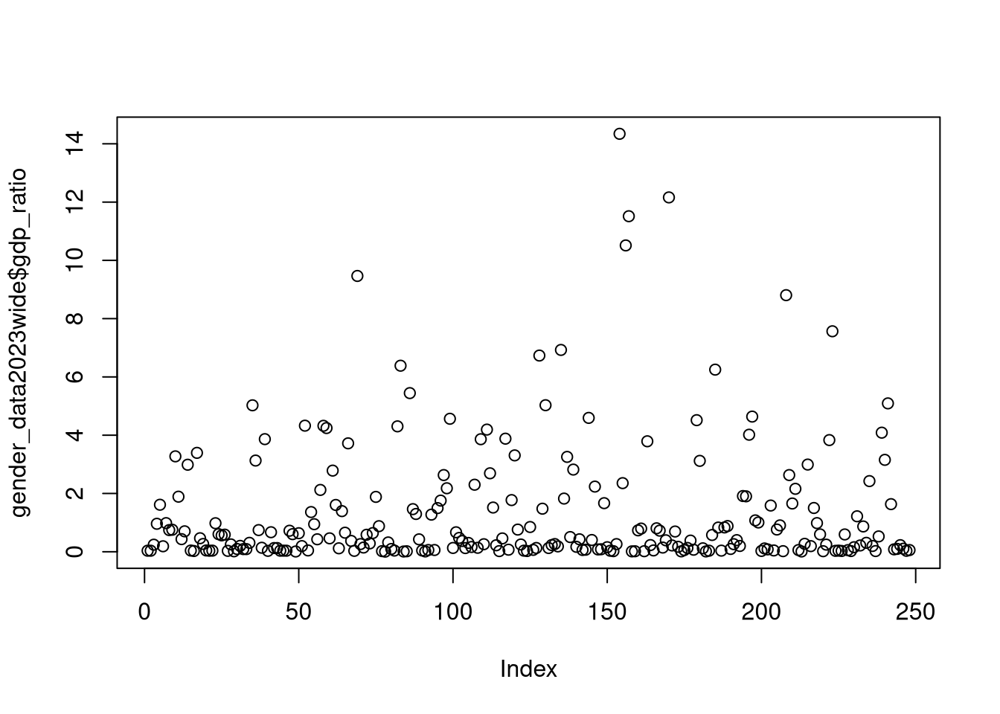

Code
install.packages("pak", dependencies=TRUE)
library(pak)
pkg_install("tidyverse")
pkg_install("reticulate")
devtools::session_info()Copyright Ryan Womack, 2026. This work is licensed under CC BY-NC-SA 4.0
Data Analysis 1
overview, data methods, and data wrangling with R + comparison with Python
This workshop reviews the basics of importing, examining, and manipulating data (“data wrangling”) in R, with some brief comparisons to the Python approach to accomplishing the same tasks [Python examples will be integrated in upcoming versions.]
This workshop does not cover the installation of R and RStudio, but assumes that you have a working copy available.
R is open source software for statistical analysis, available at R-project.org. It is recommended to install R first. R commands can be executed by many editors and IDEs, directly in the terminal, or via script files. However, one of the most powerful and common methods, which we will use here, is to use the RStudio IDE.
RStudio, available from Posit as an open source download, is a tool for creating and running R code (and Python and a few other languages), with many helpful features and templates for working with the other formats and tools in the R ecosystem. RStudio will make use of your installed version of R, running as a layer on top. Posit is also developing Positron as a newer IDE with more flexibility to work with R, Python, and other possible languages. This workshop does not use Positron, although the code should also work there.
For immediate use without installation, try the following:
R/RStudio is also available via Rutgers OIT Computer Labs and their Virtual Lab.
The Posit Cloud is also a free service that allows you to use RStudio (with some limitations on time and memory) with the creation of an account.
Please see the Getting Started with R video for more details (or other web tutorials and guides).
Python is also open-source, and can be used with various editors and tools, which are not detailed here.
We will use the pak package for installation as a more complete approach to package management. Replace the pkg commands with install.packages() versions if you prefer.
This session relies on the tidyverse suite of packages for data manipulation as a preference, although the same tasks could be accomplished in base R using other functions. Install pak and tidyverse if you don’t already have them on your system. We will also need reticulate to run Python code chunks.
install.packages("pak", dependencies=TRUE)
library(pak)
pkg_install("tidyverse")
pkg_install("reticulate")
devtools::session_info()Note that the update.packages() can be run periodically to check for newer versions of any packages installed.
Now let’s load the tidyverse and reticulate (for Python support only)
library(tidyverse)── Attaching core tidyverse packages ──────────────────────── tidyverse 2.0.0 ──
✔ dplyr 1.1.4 ✔ readr 2.1.6
✔ forcats 1.0.1 ✔ stringr 1.6.0
✔ ggplot2 4.0.1 ✔ tibble 3.3.1
✔ lubridate 1.9.4 ✔ tidyr 1.3.2
✔ purrr 1.2.1
── Conflicts ────────────────────────────────────────── tidyverse_conflicts() ──
✖ dplyr::filter() masks stats::filter()
✖ dplyr::lag() masks stats::lag()
ℹ Use the conflicted package (<http://conflicted.r-lib.org/>) to force all conflicts to become errors# Sys.setenv(RETICULATE_PYTHON = "/usr/bin/python3")
library(reticulate)
use_python("/usr/bin/python3")R is case sensitive. While Getwd() will return an error when typed in the console, getwd() will show you the current working directory. On the other hand, getwd without parentheses will print the internal workings of the command. R is often terse and offers little feedback. A successful command may simply return you to a blank cursor, while an error may require some searching on Stack Exchange or similar sites to discover how to fix it.
The console may be used as a calculator, providing answers for everything from 2+2 to 2^1000 (2 to the 1000th power). 2+2. However, 2^1024 will exceed the range of numbers that R can calculate, returning “Inf” for infinity. Most other functions such as ln or e that one would find on a scientific calculator are available.
R is built for statistics and has a full range of sampling capabilities and probability distributions. Parameters can be passed to customize these functions. See the CRAN Task View for Probability Distributions for more details.
# draw ten numbers at random from the range 1 to 100
sample(1:100,10) [1] 24 53 7 76 62 13 96 95 68 9# draw ten numbers from the standard normal distribution
rnorm(10) [1] -1.6877126 0.2094790 -1.2668308 0.8049329 1.5238116 -0.4680209
[7] 1.8883174 -0.4081182 -0.5613338 0.6732555# draw ten numbers from a normal distribution with mean 100 and standard deviation 20
rnorm(10, mean=100, sd=20) [1] 95.81910 120.83129 123.56143 101.52361 70.85218 75.64314 92.59156
[8] 125.64729 100.23488 92.27888We can also sample from a data object, such as a list of respondent names. In addition to sampling from distributions, we can calculate values based on the probability distribution functions (PDF), cumulative distribution functions (CDF), and quantiles of these distributions in a very flexible manner. See the Introduction to R manual for a brief discussion. There are also many other tutorials on the Web.
Creating your own functions is easy. Name the function, use the assignment operator (<-), then the function argument, enclosing the actual workings of the function in curly brackets {}. While the example below is simple, complex conditional statements of any length can be used within the brackets.
# define the function
funkyadd<-function(x,y)
{
x+y+1
}
# run the function with arguments
funkyadd(2,2)[1] 5The ease of adding functions is one element in the flourishing of the large (22,000+) ecosystem of R packages, as individual researchers and users build the functions and tools to meet their analytical needs.
The R help system is easy to access. Use a question mark before the name of a specific function to pull up its manual page ( ?sample or ?rnorm). Use two question marks to search The help tab in the lower right quadrant of RStudio also allows full access to the built in help, including manuals and searching.
Searching the internet for R help can be useful, since there are a wealth of tutorials, blog posts, and other material on general methods and specific R packages. It is helpful to add something like “R statistics” or “R software” or “R package” to your search to distinguish from all other uses of the letter R!
Two subscription resources available to Rutgers students are the O’Reilly collection of technology resources, including books, videos, and mini-courses, and Springer Nature, which has a series called “Use R!” that provides practical guides to both general and specialized disciplinary methods for working with R. Just search for “Use R!” once logged in.
Here we also briefly review the basic layout of RStudio in the live demo or video.
We will be preferring tidyverse commands and methods throughout this workshop. The tidyverse is a very functional and well-structured collection of packages, backed by Posit, that is an excellent entry point into the world of R. However, one should be aware that as with most things in R, there are multiple possible paths to accomplishing the same task. So do not feel limited to this approach.
readr is the basic tidyverse package for importing plain text files of data into R.
# start with a tab-separated file
download.file("https://ryanwomack.com/data/myfile.txt", "myfile.txt")
mydata <- read_tsv("myfile.txt")Rows: 4 Columns: 3
── Column specification ────────────────────────────────────────────────────────
Delimiter: "\t"
chr (1): sex
dbl (2): age, height
ℹ Use `spec()` to retrieve the full column specification for this data.
ℹ Specify the column types or set `show_col_types = FALSE` to quiet this message.mydata# A tibble: 4 × 3
sex age height
<chr> <dbl> <dbl>
1 M 22 170
2 F 33 180
3 M 44 190
4 F 55 200read_tsv imports tab-separated text files. Later we will see read_csv which imports the most widely used comma-separated text file format. Among data formats, this is highly interoperable and error-proof, and is recommended for data sharing wherever appropriate.
Instead of the underscore (_) typical of tidyverse data import commands, base R will use a period (.) separator, as in the read.csv command.
See readr.tidyverse.org for complete details. While the defaults for these functions are reasonable, the options outlined there will help you to adjust the import process for your particular use case and to deal with any errors.
As described on their site, the tidyverse is opinionated. In the case of data import, the tidyverse style commands will make fewer assumptions about data you are imported. If an inconsistency is encountered, it is more likely to throw an error and ask you to fix it, rather than silently choosing an option to resolve it. In base R data import, this results in the data import appearing to be “easy”, and then oddities later in the analysis appearing, resulting from assumptions like coercing all data to be a certain type. In the tidyverse, the initial data import may require more patience and tweaking, but the resulting data frame will behave exactly as you have chosen.
Note that for any data we can import, we can also export in that format. For csv files, use the write_csv command.
The readxl package is used for .xls and .xlsx sheets. One thing to note is the number used to indicate which of the sheets in a file to import. If the sheet is named, that can also be used. The writexl package exports Excel-format files.
# install.packages("readxl")
library(readxl)
download.file("https://ryanwomack.com/data/mydata.xlsx", "mydata.xlsx")
mydata<-read_excel("mydata.xlsx", 1)
mydata# A tibble: 4 × 3
sex age height
<chr> <dbl> <dbl>
1 M 22 170
2 F 33 180
3 M 44 190
4 F 55 200There are other non-tidyverse alternatives to working with Excel files that you may encounter.
The haven package is used to read and write SAS, Stata, and SPSS formats. The foreign package is the traditional base R way of accomplishing these tasks.
googledrive allows you to interact with files on Google Drive from R.
rvest for web scraping.
The following are not in the core tidyverse, but are useful nevertheless.
jsonlite for JSON files.
xml2 for working with XML.
httr for interacting with web APIs.
feather for sharing with Python and other languages.
DBI for working with relational databases. To connect to a specific database, you’ll need to pair DBI with a specific backend like RSQLite, RPostgres, or odbc. Learn more at https://solutions.posit.co/connections/db/.
Rclone for working with cloud sites like AWS, Box, Dropbox, and many more. Note that Rclone is not an R package (in spite of its name), but a standalone command line application. However, rclone commands can be run from with R or RStudio.
There are even more things that can be done with data, since R has packages for nearly everything, but let’s move on to working with data, a.k.a. “data wrangling”.
To quote the tibble webpage, “tibbles are data.frames that are lazy and surly: they do less (i.e. they don’t change variable names or types, and don’t do partial matching) and complain more (e.g. when a variable does not exist). This forces you to confront problems earlier, typically leading to cleaner, more expressive code. Tibbles also have an enhanced print() method which makes them easier to use with large datasets containing complex objects.”
While the tibble is a “better-behaved” data.frame, at least in some ways data.frame is the traditional R data structure and many packages still expect it. We can convert back and forth between tibbles and data frames easily, however. The as.data.frame command converts a tibble to a data frame, while the as_tibble command converts a data frame to a tibble.
library(tibble)
# "as" functions in R convert back and forth between formats
# "." notation in base R, "_" notation in tidyverse
as.data.frame(mydata) sex age height
1 M 22 170
2 F 33 180
3 M 44 190
4 F 55 200as_tibble(iris)# A tibble: 150 × 5
Sepal.Length Sepal.Width Petal.Length Petal.Width Species
<dbl> <dbl> <dbl> <dbl> <fct>
1 5.1 3.5 1.4 0.2 setosa
2 4.9 3 1.4 0.2 setosa
3 4.7 3.2 1.3 0.2 setosa
4 4.6 3.1 1.5 0.2 setosa
5 5 3.6 1.4 0.2 setosa
6 5.4 3.9 1.7 0.4 setosa
7 4.6 3.4 1.4 0.3 setosa
8 5 3.4 1.5 0.2 setosa
9 4.4 2.9 1.4 0.2 setosa
10 4.9 3.1 1.5 0.1 setosa
# ℹ 140 more rowsThe data.table package is not a part of the tidyverse, but is important to be aware of. It is a high performance version of the data frame suitable for big data applications, using the fread command to import data.
Now let’s grab some data. We will use a realistic data example, the World Bank’s Gender Statistics database, whose raw data is directly downloadable. Other World Bank Open Data is available as well. See genderdata.worldbank.org for more background on the Gender Data portal. Note that we have to inspect the data and understand the variables first before manipulating in R – this is not an automatic process. The dataset we download is over 150MB in size.
Our hypothetical researcher wants to isolate selected variables for selected countries for one recent year of data. We’ll work through this step by step to illustrate data commands at our disposal for wrangling.
# note the timeout options below may be useful if you're on a slow connection or the World Bank site is slow to respond.
getOption("timeout")[1] 60options(timeout=6000)
download.file("https://databank.worldbank.org/data/download/Gender_Stats_CSV.zip", "gender.zip")
unzip("gender.zip")
# we read in the data with read_csv and examine it, then remove two unneeded columns with codes, using basic matrix notation
gender_data <- read_csv("Gender_StatsCSV.csv")Rows: 338405 Columns: 69
── Column specification ────────────────────────────────────────────────────────
Delimiter: ","
chr (4): Country Name, Country Code, Indicator Name, Indicator Code
dbl (65): 1960, 1961, 1962, 1963, 1964, 1965, 1966, 1967, 1968, 1969, 1970, ...
ℹ Use `spec()` to retrieve the full column specification for this data.
ℹ Specify the column types or set `show_col_types = FALSE` to quiet this message.names(gender_data) [1] "Country Name" "Country Code" "Indicator Name" "Indicator Code"
[5] "1960" "1961" "1962" "1963"
[9] "1964" "1965" "1966" "1967"
[13] "1968" "1969" "1970" "1971"
[17] "1972" "1973" "1974" "1975"
[21] "1976" "1977" "1978" "1979"
[25] "1980" "1981" "1982" "1983"
[29] "1984" "1985" "1986" "1987"
[33] "1988" "1989" "1990" "1991"
[37] "1992" "1993" "1994" "1995"
[41] "1996" "1997" "1998" "1999"
[45] "2000" "2001" "2002" "2003"
[49] "2004" "2005" "2006" "2007"
[53] "2008" "2009" "2010" "2011"
[57] "2012" "2013" "2014" "2015"
[61] "2016" "2017" "2018" "2019"
[65] "2020" "2021" "2022" "2023"
[69] "2024" gender_data <- gender_data[,c(-2,-4)]
names(gender_data) [1] "Country Name" "Indicator Name" "1960" "1961"
[5] "1962" "1963" "1964" "1965"
[9] "1966" "1967" "1968" "1969"
[13] "1970" "1971" "1972" "1973"
[17] "1974" "1975" "1976" "1977"
[21] "1978" "1979" "1980" "1981"
[25] "1982" "1983" "1984" "1985"
[29] "1986" "1987" "1988" "1989"
[33] "1990" "1991" "1992" "1993"
[37] "1994" "1995" "1996" "1997"
[41] "1998" "1999" "2000" "2001"
[45] "2002" "2003" "2004" "2005"
[49] "2006" "2007" "2008" "2009"
[53] "2010" "2011" "2012" "2013"
[57] "2014" "2015" "2016" "2017"
[61] "2018" "2019" "2020" "2021"
[65] "2022" "2023" "2024" The goal of tidyr is to help you create tidy data. Tidy data is data where:
First we use pivot_longer to create long format data. Long vs. Wide data explained. Then we filter the data for a recent year (2023 has relatively complete data). The pivot_wider to restore the data to wide format.
Note that we are also renaming the datasets as we go. This lets us easily go back to an earlier version if we mess anything up. As long as you have enough memory to do this, it is highly recommended.
# pivot_longer
gender_data2 <-
gender_data |>
pivot_longer(3:67, names_to = "Year", values_to = "Value")
# filter
gender_data2023 <-
gender_data2 |>
filter(Year=="2023")
# we no longer need the Year variable, since all are 2023
gender_data2023 <- gender_data2023[,-3]
# pivot_wider
gender_data2023wide <-
gender_data2023 |>
pivot_wider(names_from = "Indicator Name", values_from = "Value")
# write this version of the data to a file
write_csv(gender_data2023wide, "widedata.csv")In much older R code, you will commonly see the “%>%” characters used to pass commands from one line to the next. This is called the “pipe” and is functionality introduced by the magrittr package. Since this was used so much, it has been integrated into the tidyverse without the need for an additional package. The “|>” character combination is the newer way of expressing this (although the older way will still work). When you see this, you can think of it as “and then” we pass to the next line. So “gender_data2023 |> pivot_wider” means take the gender_data2023 data “and then” use the pivot_wider command on it. This kind of syntax is very human-readable and easy-to-understand for steps in data wrangling.
Now that we have created the dataset, we can get descriptive statistics about our data with either summary (base R) or summarise (tidyverse), which allows us to be more specific about what we would like to examine.
ls()
summary(gender_data)
summary(gender_data2023)
summary(gender_data2023wide)
# summarise is the tidyverse way, from dplyr
gender_data2023wide |>
summarise_if(is.numeric, mean, na.rm=TRUE)Results of this code chunk are not displayed here because they are too voluminous. Note that ls() lists items in the workspace, while rm() removes them. Do not execute the command below unless you are sure! It removes all files!
rm(list = ls())
The tidyverse loads the following packages by defualt, as we’ve seen readr, tibble, tidyr
We will look briefly at purr, forcats, stringr, and lubridate later.
ggplot2, the primary data visualization tool of the tidyverse, is the subject of a later workshop.
However, the dplyr package is one of the most useful and commonly used, providing a grammar of data manipulation, with a consistent set of verbs that help you solve the most common data manipulation challenges:
mutate
select
filter
summarise
arrange
We will look at these one by one. They are both straightforward and powerful when used with various options.
mutate adds new variables that are functions of existing variables
gender_data2023wide <-
gender_data2023wide |>
mutate(gdp_ratio = (`GDP per capita (Current US$)`/10000)/`Fertility rate, total (births per woman)`)
# we can use a function like drop_na to eliminate missing data from a variable
gender_data2023wide <-
drop_na(gender_data2023wide, gdp_ratio)
plot(gender_data2023wide$gdp_ratio)
gender_data2023wide <-
gender_data2023wide |>
mutate(hi_ratio = gdp_ratio>0.78)
attach(gender_data2023wide)select() picks variables based on their names. There are several flexible methods for choosing matching names. Here our hypothetical research chooses only the variables beginning with GDP (not case-sensitive).
gender_gdp <-
select(gender_data2023wide, c(`Country Name`,starts_with("GDP")))
gender_gdp# A tibble: 248 × 6
`Country Name` `GDP (current US$)` GDP growth (annual %…¹
<chr> <dbl> <dbl>
1 Africa Eastern and Southern 1.13e12 1.89
2 Africa Western and Central 8.15e11 3.36
3 Arab World 3.61e12 1.50
4 Caribbean small states 7.95e10 9.01
5 Central Europe and the Baltics 2.27e12 0.763
6 Early-demographic dividend 1.51e13 4.61
7 East Asia & Pacific 3.13e13 4.19
8 East Asia & Pacific (excluding hi… 2.16e13 5.25
9 East Asia & Pacific (IDA & IBRD) 2.16e13 5.25
10 Euro area 1.58e13 0.419
# ℹ 238 more rows
# ℹ abbreviated name: ¹`GDP growth (annual %)`
# ℹ 3 more variables: `GDP per capita (constant 2015 US$)` <dbl>,
# `GDP per capita (Current US$)` <dbl>, gdp_ratio <dbl>write_csv(gender_gdp, "gender_gdp.csv")filter picks cases based on their values. Here we further reduce the size of the dataset to include only the GDP variables for a smaller list of 24 countries. We can also filter by criteria.
# select countries of interest
country_list <- c("Armenia", "Azerbaijan", "Canada", "China", "France", "Georgia", "Germany", "India", "Italy", "Japan", "Kazakhstan", "Korea, Rep.", "Kyrgyz Republic", "Mexico", "Mongolia", "Russian Federation", "Saudi Arabia", "Tajikistan", "Turkiye", "Turkmenistan", "United Arab Emirates", "United Kingdom", "United States", "Uzbekistan")
gender_data2023selected <-
gender_gdp |>
filter(`Country Name` %in% country_list)
write_csv(gender_data2023selected, "gender_selected.csv")
# filter by criteria
gender_data2023filtered <-
gender_data2023selected |>
filter(gdp_ratio>2)
gender_data2023filtered# A tibble: 9 × 6
`Country Name` `GDP (current US$)` `GDP growth (annual %)`
<chr> <dbl> <dbl>
1 Canada 2.17e12 1.53
2 France 3.05e12 0.936
3 Germany 4.53e12 -0.266
4 Italy 2.30e12 0.715
5 Japan 4.21e12 1.48
6 Korea, Rep. 1.71e12 1.36
7 United Arab Emirates 5.14e11 3.62
8 United Kingdom 3.37e12 0.397
9 United States 2.77e13 2.89
# ℹ 3 more variables: `GDP per capita (constant 2015 US$)` <dbl>,
# `GDP per capita (Current US$)` <dbl>, gdp_ratio <dbl>summarise reduces multiple values down to a single summary.
gender_data2023wide |>
summarise(mean = mean(gdp_ratio), n = n(), median = median(gdp_ratio))# A tibble: 1 × 3
mean n median
<dbl> <int> <dbl>
1 1.36 248 0.427# Usually, you'll want to group first
gender_data2023wide |>
group_by(hi_ratio) |>
summarise(mean = mean(gdp_ratio, na.rm=TRUE), n = n())# A tibble: 2 × 3
hi_ratio mean n
<lgl> <dbl> <int>
1 FALSE 0.223 156
2 TRUE 3.27 92arrange changes the ordering of the rows. It is the dplyr equivalent of sort in base R.
gender_gdp <-
gender_gdp |>
arrange(desc(gdp_ratio))
gender_gdp$gdp_ratio [1] 14.343008120 12.160213987 11.514766055 10.512614509 9.464984945
[6] 8.805384572 7.566300959 6.925853359 6.733084524 6.384683729
[11] 6.249809209 5.444462636 5.091532349 5.028936865 5.025713160
[16] 4.638280778 4.593810165 4.563591795 4.515524892 4.326473979
[21] 4.322394665 4.303200675 4.244967712 4.192183447 4.086724563
[26] 4.016130831 3.880604845 3.864530712 3.861742830 3.832213035
[31] 3.790795414 3.720414576 3.393695661 3.306895100 3.273596661
[36] 3.255452036 3.153898087 3.129524745 3.118904117 2.991876143
[41] 2.986331259 2.819681302 2.784542934 2.692224972 2.631491574
[46] 2.631481996 2.424484973 2.354746253 2.300252248 2.235948100
[51] 2.178693574 2.159609995 2.121397667 1.912371702 1.901825837
[56] 1.889754525 1.882687421 1.824691932 1.772782415 1.755145137
[61] 1.667321958 1.655942839 1.633741814 1.613089610 1.605818444
[66] 1.585826681 1.517264617 1.501691045 1.497633992 1.477627750
[71] 1.462470992 1.393678278 1.362138619 1.296414238 1.273836602
[76] 1.216661830 1.076273280 1.004211893 0.982941877 0.982185314
[81] 0.978740663 0.959898173 0.945832182 0.904094633 0.881850170
[86] 0.877561428 0.867924404 0.848826709 0.833740147 0.830593390
[91] 0.804473854 0.795578428 0.762826450 0.760476626 0.755030484
[96] 0.743773567 0.743491245 0.734134529 0.723881186 0.720908921
[101] 0.700795134 0.694101995 0.670028137 0.667989362 0.653704792
[106] 0.640987602 0.636140308 0.603859763 0.603810037 0.596189615
[111] 0.593655224 0.587155384 0.582975991 0.574952267 0.561604435
[116] 0.526059175 0.503661637 0.473938107 0.463823714 0.460195379
[121] 0.457661304 0.432201166 0.427645998 0.427603836 0.425582772
[126] 0.402666903 0.398360700 0.392812591 0.382893628 0.371698961
[131] 0.369602166 0.319401566 0.306046552 0.305939989 0.302278587
[136] 0.286469757 0.271775385 0.266779110 0.263459449 0.262613495
[141] 0.262115179 0.260115205 0.258164694 0.252456305 0.249169570
[146] 0.244289644 0.242080623 0.229257534 0.228788708 0.225998449
[151] 0.221316089 0.216245596 0.215631842 0.201557470 0.198542941
[156] 0.197779770 0.193927258 0.192446310 0.187699540 0.183604751
[161] 0.169233920 0.169123152 0.163631302 0.155441478 0.155324917
[166] 0.144730270 0.143426946 0.137159566 0.135913190 0.130373755
[171] 0.130223080 0.129098305 0.128107358 0.126900218 0.126900218
[176] 0.125701443 0.117938869 0.117648554 0.113089016 0.104350001
[181] 0.097754069 0.095710497 0.094485671 0.094212816 0.090698308
[186] 0.090594110 0.085375869 0.082256251 0.080706189 0.079193411
[191] 0.070176747 0.069673919 0.069199274 0.064222819 0.060857375
[196] 0.059646814 0.059609778 0.058366817 0.058307171 0.057895652
[201] 0.055504974 0.045152718 0.045072875 0.044474434 0.044278581
[206] 0.043378103 0.041180324 0.040186509 0.038361976 0.037972266
[211] 0.037868773 0.036913099 0.036886264 0.035767630 0.035655799
[216] 0.035655799 0.035623315 0.035560188 0.034645067 0.034011989
[221] 0.032448861 0.031245307 0.031064784 0.030804192 0.030600918
[226] 0.027772701 0.026584664 0.025465817 0.025154524 0.023513777
[231] 0.023402035 0.022170679 0.021086713 0.020232771 0.019990733
[236] 0.018451415 0.018442828 0.016511612 0.016161087 0.014991588
[241] 0.013079690 0.012807614 0.010531861 0.010467620 0.009743295
[246] 0.008548717 0.008249815 0.003937563write_csv(gender_gdp, "gender_gdp.csv")See the articles page in the dplyr reference for more information about combining and controlling these operations (joining datasets, working across columns or rows of data, and more).
In addition to tidyr and dplyr, there are five tidyverse packages which are designed to work with specific types of data:
lubridate for dates and date-times.
hms for time-of-day values.
blob for storing blob (binary) data.
stringr provides a cohesive set of functions designed to make working with strings as easy as possible.
forcats provides a suite of useful tools that solve common problems with factors. R uses factors to handle categorical variables.
Each of these provides very convenient functions for handling data that might otherwise be tricky with general methods.
The purrr package enhances R’s functional programming (FP) toolkit by providing a complete and consistent set of tools for working with functions and vectors. Once you master the basic concepts, purrr allows you to replace many for loops with code that is easier to write and more expressive.
For example, the “map” family of commands allows you to apply a function to each element of a vector.
# an example of map in action
mtcars |>
split(mtcars$cyl) |>
map(\(df) lm(mpg ~ wt, data = df)) |>
map(summary) |>
map_dbl("r.squared") 4 6 8
0.5086326 0.4645102 0.4229655 glue provides an alternative to base R’s paste() that makes it easier to combine data and strings.
broom turns models into tidy data which you can then wrangle and visualise using the tools you already know. The key commands are tidy, glance, and augment
library(broom)Registered S3 methods overwritten by 'backports':
method from
as.character.Rconcordance tools
print.Rconcordance toolsregoutput<-lm(`GDP per capita (constant 2015 US$)`~`Fertility rate, total (births per woman)`, gender_data2023wide)
# base R regression summary
summary(regoutput)
Call:
lm(formula = `GDP per capita (constant 2015 US$)` ~ `Fertility rate, total (births per woman)`,
data = gender_data2023wide)
Residuals:
Min 1Q Median 3Q Max
-27105 -12784 -5230 4234 205446
Coefficients:
Estimate Std. Error t value Pr(>|t|)
(Intercept) 38008 3139 12.108 < 2e-16
`Fertility rate, total (births per woman)` -8944 1163 -7.689 3.6e-13
(Intercept) ***
`Fertility rate, total (births per woman)` ***
---
Signif. codes: 0 '***' 0.001 '**' 0.01 '*' 0.05 '.' 0.1 ' ' 1
Residual standard error: 22020 on 245 degrees of freedom
(1 observation deleted due to missingness)
Multiple R-squared: 0.1944, Adjusted R-squared: 0.1911
F-statistic: 59.12 on 1 and 245 DF, p-value: 3.599e-13# broom variants
tidy(regoutput)# A tibble: 2 × 5
term estimate std.error statistic p.value
<chr> <dbl> <dbl> <dbl> <dbl>
1 (Intercept) 38008. 3139. 12.1 9.27e-27
2 `Fertility rate, total (births per woma… -8944. 1163. -7.69 3.60e-13glance(regoutput)# A tibble: 1 × 12
r.squared adj.r.squared sigma statistic p.value df logLik AIC BIC
<dbl> <dbl> <dbl> <dbl> <dbl> <dbl> <dbl> <dbl> <dbl>
1 0.194 0.191 22023. 59.1 3.60e-13 1 -2819. 5645. 5655.
# ℹ 3 more variables: deviance <dbl>, df.residual <int>, nobs <int>augment(regoutput)# A tibble: 247 × 9
.rownames GDP per capita (constant 2…¹ Fertility rate, tota…² .fitted .resid
<chr> <dbl> <dbl> <dbl> <dbl>
1 1 1413. 4.22 230. 1183.
2 2 1842. 4.50 -2220. 4062.
3 3 6321. 3.09 10373. -4052.
4 4 16395. 1.83 21625. -5230.
5 5 16514. 1.41 25422. -8907.
6 6 3878. 2.30 17453. -13575.
7 7 12738. 1.34 26063. -13325.
8 8 9665. 1.36 25832. -16166.
9 9 9774. 1.36 25878. -16104.
10 10 37909. 1.38 25694. 12214.
# ℹ 237 more rows
# ℹ abbreviated names: ¹`GDP per capita (constant 2015 US$)`,
# ²`Fertility rate, total (births per woman)`
# ℹ 4 more variables: .hat <dbl>, .sigma <dbl>, .cooksd <dbl>, .std.resid <dbl># a grouped example
regressions <- gender_data2023wide |>
group_by(hi_ratio) |>
nest() |>
mutate(
fit = map(data, ~ lm(`GDP per capita (constant 2015 US$)`~`Fertility rate, total (births per woman)`, data=.x,)),
tidied = map(fit, tidy),
glanced = map(fit, glance),
augmented = map(fit, augment)
)
regressions |>
unnest(tidied)# A tibble: 4 × 10
# Groups: hi_ratio [2]
hi_ratio data fit term estimate std.error statistic p.value glanced
<lgl> <list> <list> <chr> <dbl> <dbl> <dbl> <dbl> <list>
1 FALSE <tibble> <lm> (Inte… 9061. 492. 18.4 1.00e-40 <tibble>
2 FALSE <tibble> <lm> `Fert… -1700. 154. -11.0 3.49e-21 <tibble>
3 TRUE <tibble> <lm> (Inte… 33294. 13839. 2.41 1.82e- 2 <tibble>
4 TRUE <tibble> <lm> `Fert… 2937. 9109. 0.322 7.48e- 1 <tibble>
# ℹ 1 more variable: augmented <list>regressions |>
unnest(glanced)# A tibble: 2 × 17
# Groups: hi_ratio [2]
hi_ratio data fit tidied r.squared adj.r.squared sigma statistic
<lgl> <list> <list> <list> <dbl> <dbl> <dbl> <dbl>
1 FALSE <tibble> <lm> <tibble> 0.441 0.437 2295. 121.
2 TRUE <tibble> <lm> <tibble> 0.00117 -0.0101 30174. 0.104
# ℹ 9 more variables: p.value <dbl>, df <dbl>, logLik <dbl>, AIC <dbl>,
# BIC <dbl>, deviance <dbl>, df.residual <int>, nobs <int>, augmented <list>regressions |>
unnest(augmented)# A tibble: 247 × 14
# Groups: hi_ratio [2]
hi_ratio data fit tidied glanced GDP per capita (constant…¹
<lgl> <list> <list> <list> <list> <dbl>
1 FALSE <tibble> <lm> <tibble [2 × 5]> <tibble> 1413.
2 FALSE <tibble> <lm> <tibble [2 × 5]> <tibble> 1842.
3 FALSE <tibble> <lm> <tibble [2 × 5]> <tibble> 6321.
4 FALSE <tibble> <lm> <tibble [2 × 5]> <tibble> 3878.
5 FALSE <tibble> <lm> <tibble [2 × 5]> <tibble> 9665.
6 FALSE <tibble> <lm> <tibble [2 × 5]> <tibble> 9774.
7 FALSE <tibble> <lm> <tibble [2 × 5]> <tibble> 8270.
8 FALSE <tibble> <lm> <tibble [2 × 5]> <tibble> 10043.
9 FALSE <tibble> <lm> <tibble [2 × 5]> <tibble> 1693.
10 FALSE <tibble> <lm> <tibble [2 × 5]> <tibble> 998.
# ℹ 237 more rows
# ℹ abbreviated name: ¹`GDP per capita (constant 2015 US$)`
# ℹ 8 more variables: `Fertility rate, total (births per woman)` <dbl>,
# .fitted <dbl>, .resid <dbl>, .hat <dbl>, .sigma <dbl>, .cooksd <dbl>,
# .std.resid <dbl>, .rownames <chr>Consult the R for Data Science book to learn more about data wrangling. Also check out tidymodels a collection of packages for modeling and machine learning using tidyverse principles.